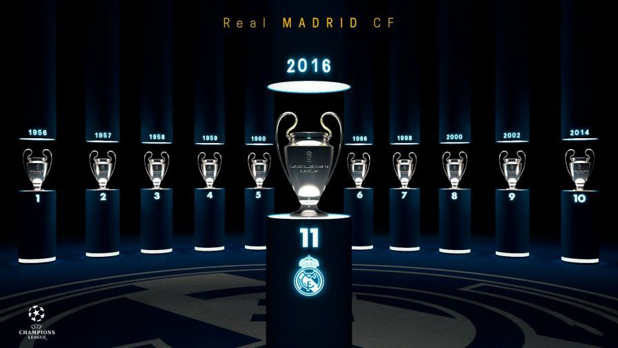
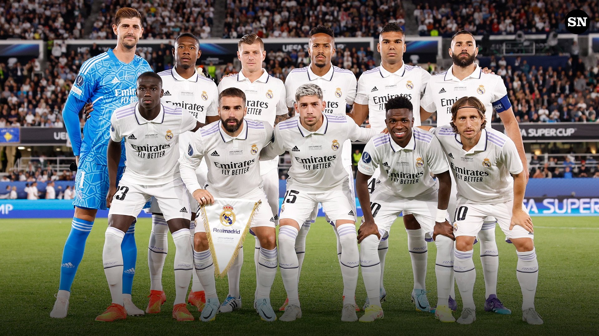

History
Real Madrid Club de Fútbol commonly known as Real Madrid, or simply as Real, is a professional football club based in Madrid, Spain.
Founded on 6 March 1902 as Madrid Football Club, the club has traditionally worn a white home kit since inception. The word Real is Spanish for Royal and was bestowed to the club by King Alfonso XIII in 1920 together with the royal crown in the emblem. The team has played its home matches in the 81,044-capacity Santiago Bernabéu Stadium in downtown Madrid since 1947. Unlike most European sporting entities, Real Madrid's members (socios) have owned and operated the club throughout its history.
The club was estimated to be worth EUR3.24 billion ($3.65 billion) in 2015, and in the 2016-17 season it was the second highest-earning football club in the world, with an annual revenue of EUR674.6 million. The club is one of the most widely supported teams in the world. Real Madrid is one of three founding members of La Liga that have never been relegated from the top division, along with Athletic Bilbao and Barcelona. The club holds many long-standing rivalries, most notably El Clásico with FC Barcelona and El Derbi with Atletico Madrid.
Titles
- 8X CHAMPIONS LEAGUE WINNER
- 6X EUROPEAN CHAMPION CLUBS' CUP
- 5X FIFA CLUB WORLD CUP WINNER
- 35X SPANISH CHAMPION
- 5X UEFA SUPERCUP WINNER
- 2X UEFA CUP WINNER
- 20X SPANISH CUP WINNER
- 12X SPANISH SUPER CUP WINNER
- 3X INTERCONTINENTAL CUP WINNER
- 1X COPA EVA DUARTE WINNER
Current Players
- 1 Thibaut Courtois (G)
- 1 Kepa (G)
- 13 Andriy Lunin (G)
- 26 Diego Pineiro (G)
- 30 Francisco Gonzalez (G)
- 31 Lucas Canizares (G)
- 43 Mario de Luis (G)
- 44 Fran Gonzalez (G)
- 2 Daniel Carvajal (D)
- 3 Eder Militao (D)
- 4 David Alaba (D)
- 6 Nacho Fernandez (D)
- 17 Lucas Vazquez (D)
- 20 Fran Garcia (D)
- 22 Antonio Rudiger (D)
- 23 Ferland Mendy (D)
- 34 Alvaro Carrillo (D)
- 35 Marvel (D)
- 36 Vinicius Augusto (D)
- 37 Edgar Pujol (D)
- 5 Jude Bellingham (M)
- 8 Toni Kroos (M)
- 10 Luka Modric (M)
- 12 Eduardo Camavinga (M)
- 15 Federico Valverde (M)
- 18 Aurelien Tchouameni (M)
- 19 Dani Ceballos (M)
- 24 Arda Guler (M)
- 28 Mario Martin (M)
- 32 Nico Paz (M)
- 38 Theo Zidane (M)
- 44 Peter (M)
- 7 Eden Hazard (F)
- 7 Vinicius Junior (F)
- 11 Rodrygo (F)
- 14 Joselu (F)
- 21 Brahim Diaz (F)
- 29 Alvaro Rodriguez (F)
- 33 Gonzalo Garcia (F)